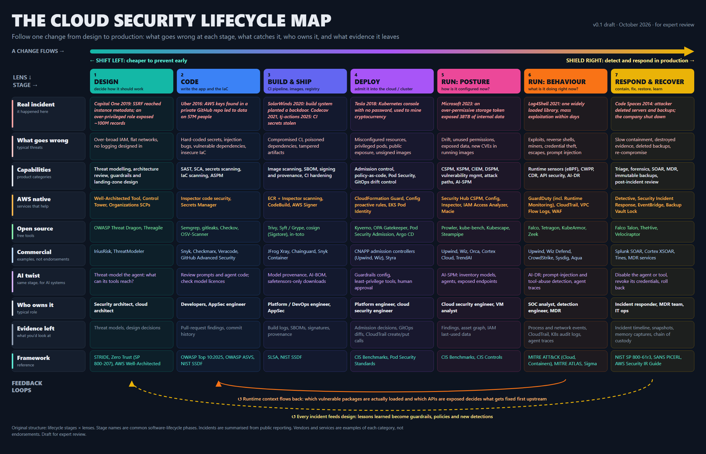
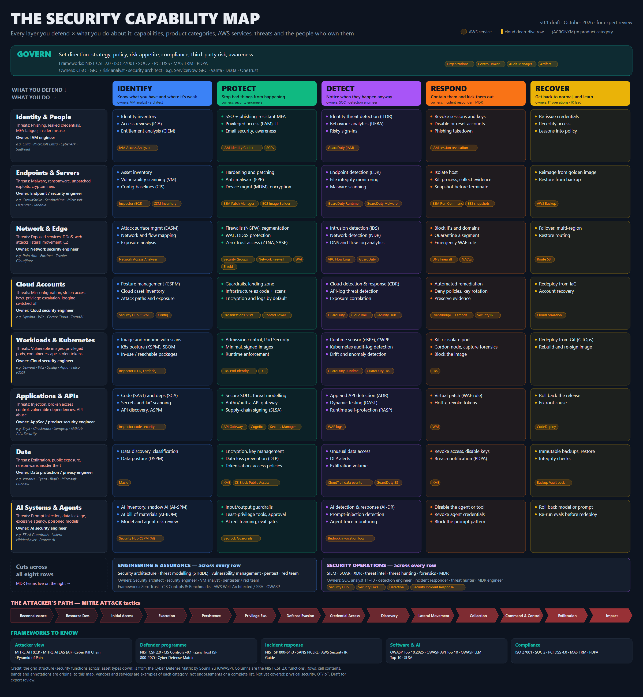

Field Guides
Maps and mental models I make while learning a field. Each one tries to put a whole
area on one page, so the pieces make sense in relation to each other. The first two
are about cloud security.
🚧 Work in progress
Both maps are v0.1 drafts. I'm a platform architect learning security, and these are
being reviewed by security practitioners. Expect mistakes and missing pieces. Corrections
are welcome: LinkedIn
or email.
Work in progress · v0.1
The Cloud Security Lifecycle Map
Follow one change from design to production. For each of seven stages: a real incident
that happened there, what goes wrong, what catches it (product categories, AWS services,
open-source and commercial tools), how it applies to AI systems, who owns it, and what
evidence it leaves behind.
- Read left to right as a change moves: design, code, build, deploy, run, respond.
- Read top to bottom to see one stage through every lens.
- The loops underneath are the point: runtime evidence decides what to fix first upstream, and every incident feeds back into design.

Draft · work in progress
Original structure. Incidents are summarised from public reporting. Vendors and services are examples of each category, not endorsements.
Work in progress · v0.1
The Security Capability Map
Every layer you defend crossed with what you do about it. Eight rows (identity, endpoints,
network, cloud accounts, workloads and Kubernetes, applications and APIs, data, AI systems)
against the five NIST functions (identify, protect, detect, respond, recover). Each cell names
the capability, its product category and the AWS services that cover it; each row names its
threats and owner.
- Products are shapes, not boxes: map any product onto the grid to see which cells it actually fills.
- The left columns are posture, the right are runtime: the two halves of cloud security.
- AI is a new row, not a new discipline: the same five verbs apply.

Draft · work in progress
Credit: the grid structure (security functions across, asset types down) is from the
Cyber Defense Matrix
by Sounil Yu (OWASP). Columns are the NIST CSF 2.0 functions. Rows, cell contents and annotations are original to this map.
More to come from other fields: platform architecture, observability, AI platforms.